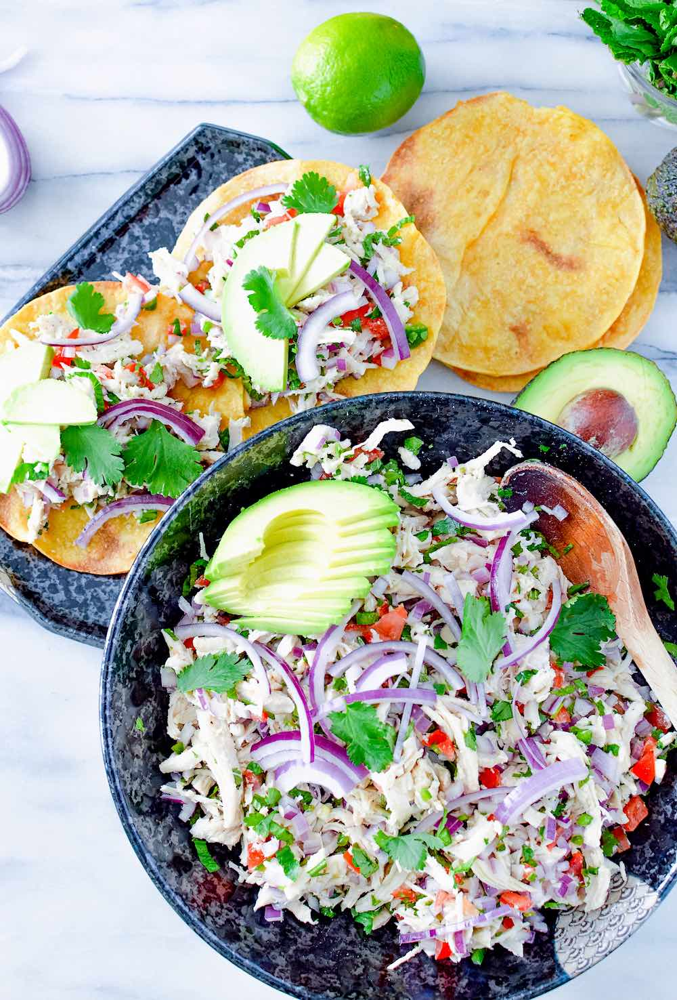

Home
Salpicon De Pollo

Description
Salpicon de pollo is a refreshing, cold chicken salad tossed with finely diced vegetables and zesty lime vinaigrette.
Ingredients
- Shredded chicken
- White onion
- Purple onion
- Cilantro
- Serrano chili peppers
- Avocados
- Limes
- Olive oil dressing
- Salt
- Pepper
- Garlic cloves
- Tostadas
Steps
- Blend lime juice, olive oil, cilantro, white onion, serrano chili peppers, salt, and pepper together.
- In a bowl, mix the blended salsa, shredded chicken, and chopped: cilantro, purple onion, chili peppers, avocados together.
- Place the bowl in the fridge for 15 minutes so the flavors can blend.
- Serve with tostadas.